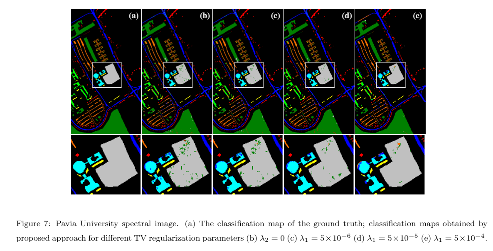

Codes
Reproducible Research
Feature fusion from dual-resolution compressive measurements for spectral image classification

- Juan Ramirez, José Ignacio Martínez Torre, and Henry Arguello. "Feature Fusion Via Dual-Resolution Compressive Measurement Matrix Analysis For Spectral Image Classification." Signal Processing: Image Communication, vol. 90, Jan, 2021. matlab codes
Recursive Weighted Myriad Filters
- Juan Ramírez and Jose Luis Paredes, "Recursive Weighted Myriad Based Filters and their Optimizations", IEEE Transactions on Signal Processing, vol.64, No. 15, pp. 4027-4039, Aug, 2016. matlab codes
Sparse Signal Recovery Based on Weighted Median

- Juan Ramírez and Jose Luis Paredes, "Robust Sparse Signal Recovery based on Weighted Median Operator", Proceedings of International Conference on Acoustic, Speech, and Signal Processing (ICASSP 2014), Florence, Italy, vol II, pp. 1050-1054, May 2014. C-codes